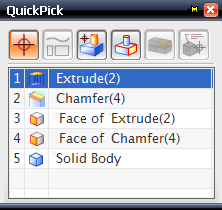

使用快速拾取来选择特征
使用快速拾取以从屏幕上拥挤区域里的多个对象中选择一个感兴趣的对象，或者从屏幕上在 Z-深度方向彼此覆盖的多个对象中选择一个。快速拾取将会列出在光标选择半径之内的所有可选对象。

要进入快速拾取对话框：
-
在快速拾取指示符
 出现在光标上之后单击。快速拾取指示符会在些许延迟之后出现。
出现在光标上之后单击。快速拾取指示符会在些许延迟之后出现。
或者
-
在光标位于对象上时点击并按住鼠标左键，当快速拾取指示符
出现时，释放鼠标按键 ，就会打开快速拾取对话框。
|
注释 |
当光标位于对象上时，快速拾取指示符出现的延迟时间由选择首选项中的快速拾取延迟来定义。 |
要关闭快速拾取对话框，点击 或按 Esc 键。
或按 Esc 键。